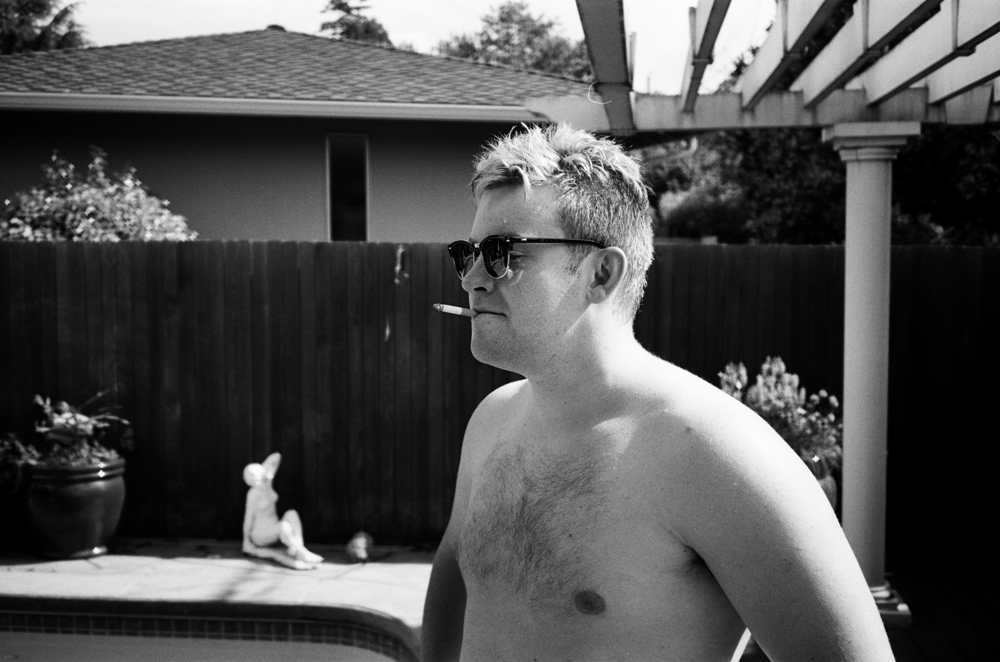
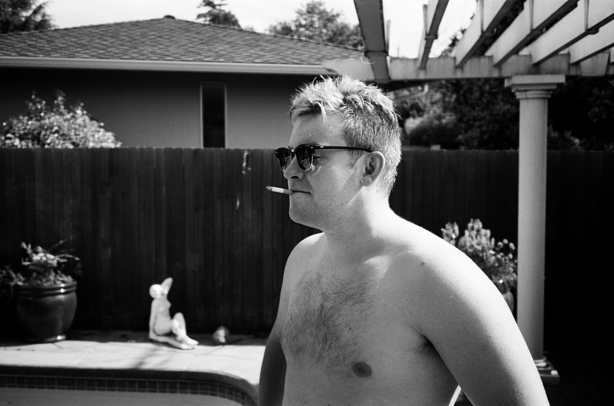

Hello! My name is Cassel Evens; I am 20 years old. My pronouns are he/him, and I currently live in San Francisco, California.
One of the beggining projects where css started to be used.
First project using box elements, divs/spans, and more in depth class elements.
Film Photography has been something I have come to love in recent years. I go out a lot and will walk around an area and just take photos of everything. Portraits are my favorite category of Photography.

 
